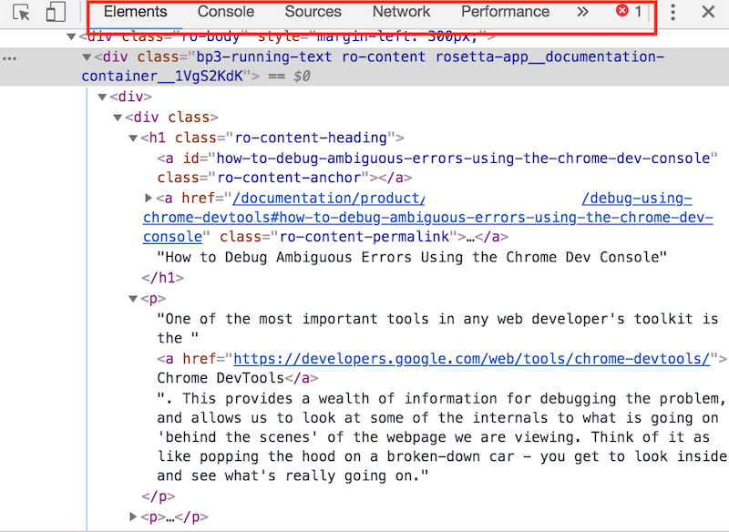
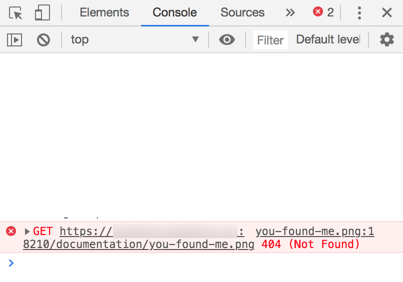
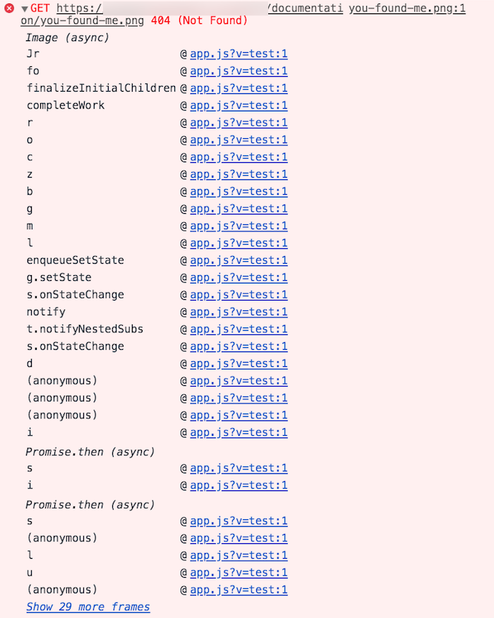
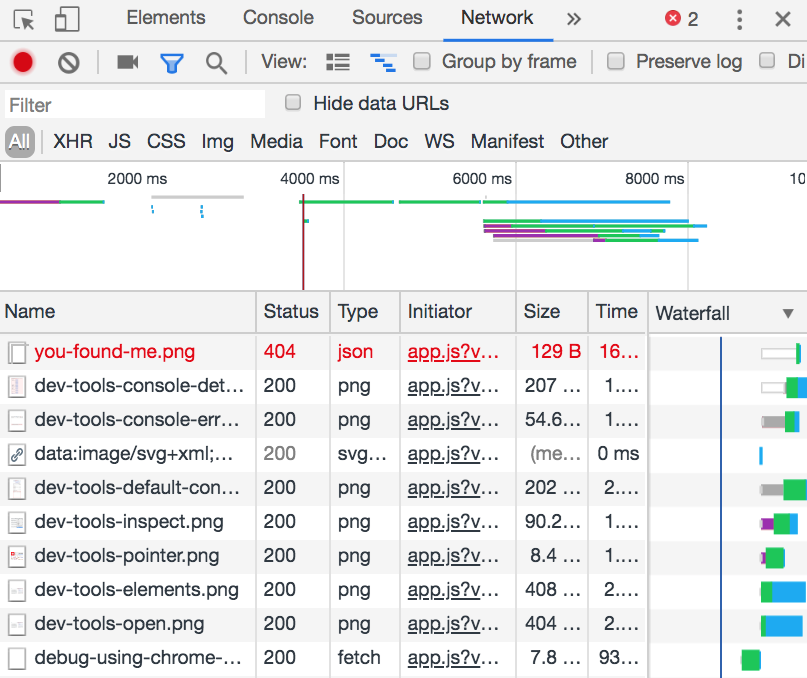
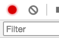
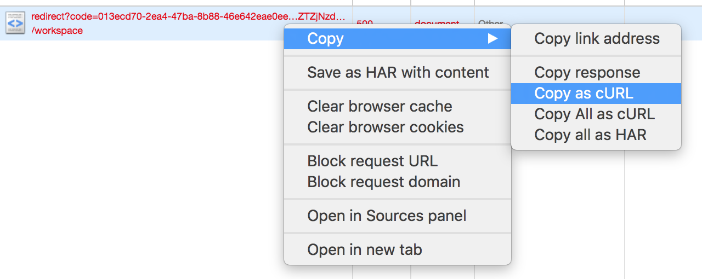
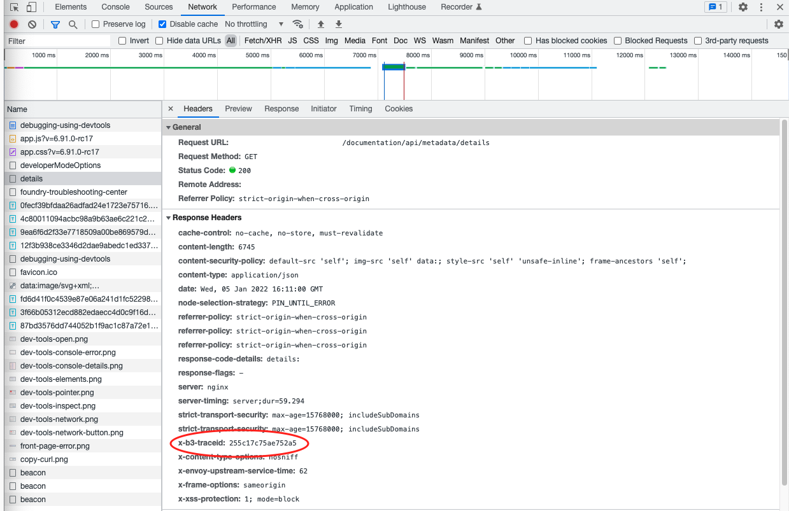
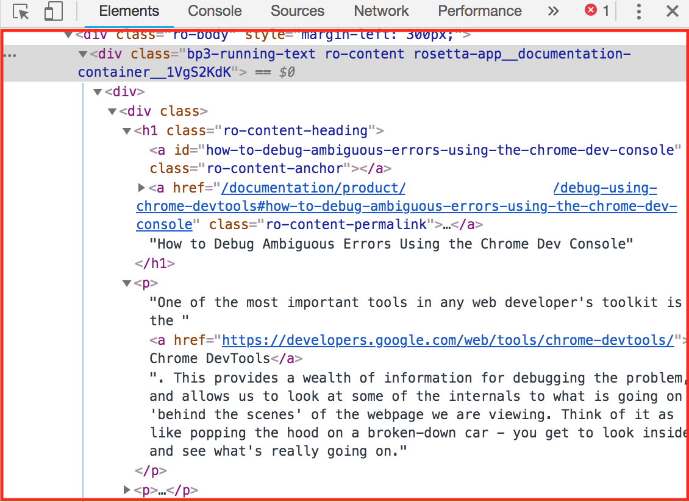
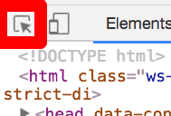
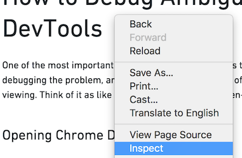

In this guide, you will learn how to use development tools (DevTools) within the Chrome⢠browser to help identify unexpected behavior or gather necessary browser logs to provide to Palantir Support.
One of the most important tools in debugging ambiguous errors is Chrome⢠DevTools â. This provides a wealth of information for debugging the problem and allows you to look at some internals around what is going on behind the scenes of the webpage you are viewing. Think of it as popping the hood on a car - you get to look inside and see what is really going on.
You can access the console log with the following steps:

The important bit for now is the toolbar at the top. For most troubleshooting, the Console and Network tabs will contain relevant error messaging and will be the most helpful for support teams. However, the Elements tab can also be useful in identifying issues, so we will cover that as well.
The Chrome⢠Console, as pictured below and accessible via the Console tab in the toolbar, has two primary purposes. The first is for use by the web application itself. The web application is allowed to print anything it wants in the console - debugging information, error logs, information messages, and so on.
The second purpose is for the user to run snippets of code and examine the results. However, this usage is beyond the scope of this guide.
When you encounter an error, it is often useful to open the console and scroll up through the history, particularly looking for errors (usually highlighted in red). These errors will be useful to report and often contain further information about what went wrong.
For example, when we load the debugging using DevTools page, we should find the following snippet in the console logs:

You may see a lot of informational lines, which are the simple white lines above, as well as errors shown in red. The error of note shows a GET request for a URL followed by the number 404, the HTTP Error Code signifying "File not found". If we were looking at the console to get more information on an error, this error would be very useful to include along with the file name. In this example, there is a reference to a you-found-me.png where the file could not be found.
In a lot of cases, it is also useful to expand the error to obtain additional information. You do this by selecting the small triangle at the start of the error:

To access the console log on a specific page:
This action can provide your support team with more information to troubleshoot. You can grab these logs by right-selecting on the error information and selecting Save as. You may need to rename your saved file from a .log file to a TXT file to upload it to the platform.
For more information, see Chrome⢠DevTools Console overview documentation â.
When you select a button in a Palantir application, your browser sends a request to a server which the server processes before sending a response. A single webpage may make many requests which do not cause the page to reload but may, for example, update the data you are seeing or send new data to the server. The Network tab lets you examine all the requests your browser is making, as well as check the responses received.

To access the network log on a specific page:
Note the Status column. This contains the HTTP Status Code of the request received in the response as discussed earlier in this document. Note there is a 404 error, and many requests which begin with 2, which means the request succeeded.
Here are some best practices for using this view to get more information about the error. First, look at the two buttons in the top-left corner of the sidebar:

The first icon in red indicates the Network tab is currently recording. This means that when a new request is made, it will be logged in the view underneath. If this is unavailable, you should toggle recording on. Similarly, if you find the requests log are populating faster than you can examine it, you can select it to again turn recording off.
The second symbol (the circle with a line through) lets you clear the log. This is useful to do right before you enact the minimum steps to reproduce. This action clears the log of all currently recorded requests so that you can see just those new requests that come in.
The best way to use this log is to:
If you find a particular request to be interesting, perhaps because it has a relevant HTTP Error Code, the following information would be useful to include in an error report. Here is an example of a request with an error generated when navigating to the front page:
Note that it is in red, denoting an error, and that the error code is 500, which means Internal Server Error. Already, this is useful information to report; we can include a screenshot of the error and say that it is hitting "500 - Internal Server".
The first thing to note is the URL that the request is made to. In this case, the redirect?code=... is the URL we are contacting. This is useful for identifying the service causing the error. For example, if the URL contains foundry-metadata, then the foundry-metadata service is causing the problem - this would certainly be useful to include in an error report.
The cURL equivalent to the request is also useful to report. You can copy it to include in your report by right-selecting the request itself and selecting Copy > Copy as cURL from the menu.

cURL is a command line tool that lets you do exactly what the request does from the command line. This button copies the exact request that was made to the clipboard and will let the debugger run the cURL request wherever and however they want, enabling examination of the request to identify what could be wrong. This is particularly useful with 4xx errors. If there are any error IDs, take note of them as well. You may want to save this copy as a TEXT file to send to Palantir Support, but take care:
The last element that will be useful to include in a report is the response itself, which you can access with Copy response from the same copy menu.
To access the Network tab on a specific page:
TraceIDs are unique identifiers of requests that enable the matching of processes happening in the browser to the records stored in logs.
To find traceIDs, open the Network Tab as described in the previous section. Different requests may be worth investigating depending on the situation; in general, red-colored (indicating failure) requests are often useful when an error is displayed in the browser.
Choose a request to see its details.

Find x-b3-traceid within Response Headers, highlighted in red in the image above.
Copy the value, in this case 255c17c75ae752a5, and share it as text with Palantir support.
For more information, review the Chrome⢠DevTools inspect network activity documentation â.
The elements tab shows you the "DOM" (Document Object Model) of the page you are viewing. This constitutes all the visual content you are seeing on the page represented in its underlying HTML form:

This tree of HTML data can be explored by using the Inspect Element tool. There are two ways to use this. First, we can use the pointer version, accessible by this button in the DevTools toolbar:

After we select this button, the pointer becomes "active" and lets us choose Elements on the webpage and view them in the DOM.
The second way to use this is to right-select on something in the page and choose Inspect from the dropdown. This has the same effect as using the pointer version.

If necessary, this can provide your support team with additional information to aid in troubleshooting.
For more information, review the Chrome⢠DevTools elements documentation â.
Chrome⢠is a trademark of Google Inc.